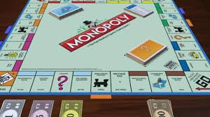
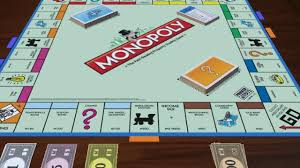
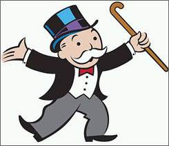

Antes
Un juego creado con la intencion de servir como herramienta para mostrar las teorias sobre la jsticia social y economica extraidas del estudio titulado Progreso y Miseria de onloadedmetadata de Henry George.
Antes
Un juego creado con la intencion de servir como herramienta para mostrar las teorias sobre la jsticia social y economica extraidas del estudio titulado Progreso y Miseria de onloadedmetadata de Henry George.
Monopoly
Comerciado por primera vez durante 1936.
A lo largo de este tiempo, el juego ha sufrido una notable evolucion. sus multiples ediciones y sus tantas versiones ha dado pie a que se cambiara incluso la caja que lo contiene hasta los elementos que lo conforman. Logrando asi, mantenerse como el favorito atravez de decadas.
Ahora
Coon el paso del tiempo la finalidad del juego cambio.
